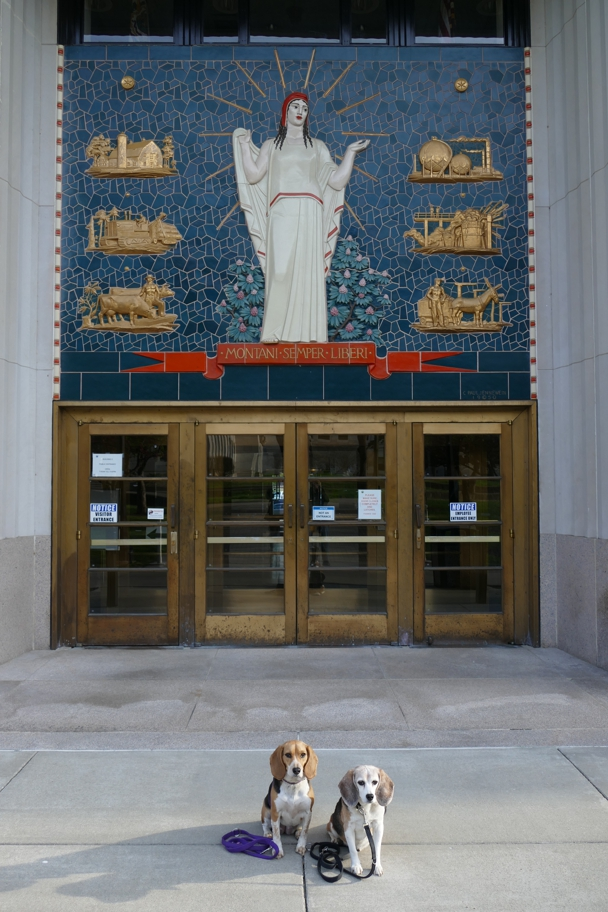

Agriculture on her right, mining on her left, she stands in front of rhododendron, the state flower. The West Virginia mountains look a lot like the Poconos, though there we have mountain laurel.
Charleston Halley Beagle Wallace Beagle West Virginia